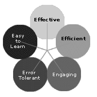
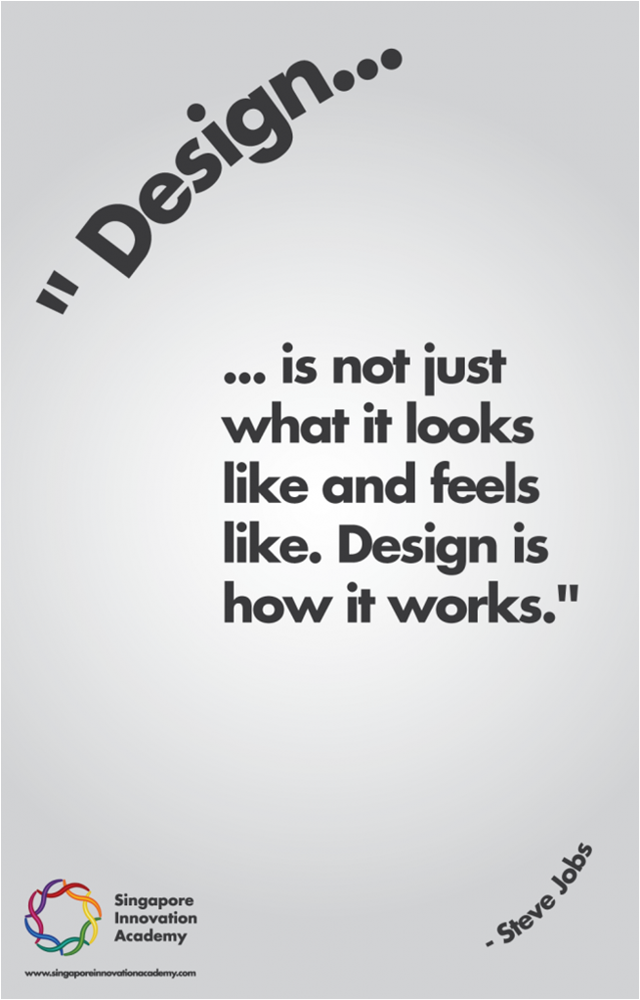

Human, user centred design
De mens
De mens als informatie verwerker bepaalt in grote mate de acceptatie van het systeem. De eigenschappen van de mens zijn echter niet voldoende. U dient ook rekening te houden met de taak die zij uitvoeren en de eigenschappen daarvan. De omstandigheden van gebruik kunnen nog meer beperkingen opleveren. Het spreekt voor zich dat een hoge kwaliteit van de software zelf ook noodzakelijk is. Beide aspecten moeten van hoge kwaliteit en uitgebalanceerd zijn om tot een succesvol systeem te komen.
Acceptatie = Interne Kwaliteit * Externe Kwaliteit
Dit betekent dat het systeem:
- Doet wat het moet doen;
- Niet doet wat het niet mag doen;
- Kwalitatief gecodeerd is;
- De gebruiker maximaal helpt bij het uitvoeren van zijn taak;
- Eenvoudig is in gebruik;
- Het systeem goed is ingevoerd in de organisatie (opleidingen, proceswijzigingen ...). Dit is het 'change management'...
Medewerkers voeren de business processen uit en zij gebruiken IT systemen om hen hierbij te helpen.
Pas als u uw gebruikers kent, rekening houdt met de eigenschappen van de mens en de eigenschappen van de taken en taakportfolio's kunt u een succesvol design maken. Dit betekent human centred, user centred en usage centred design.
Begrijp uw gebruikers
Whitney Quesenbery heeft vijf E's bepaald die het usability domein en de relatie met de gebruikers omschrijven. 5 E's komt voort uit de Engelse terminologie.
Deze 5 E's zijn:
- Effectiviteit (effective): de gebruiker kan de taken uitvoeren die hij moet uitvoeren;
- Efficiëntie (efficient): de gebruiker kan de taken met een minimale inspanning uitvoeren;
- Uitnodigend (engaging): het systeem spreekt de gebruiker aan, het is aangenaam ermee te werken;
- Vergevingsgezind (error tolerant): het systeem is zodanig ontworpen dat het maken van fouten minimaal is. Als de gebruiker een fout maakt, helpt het systeem hem om de fout te detecteren en te herstellen en behandelt de gebruiker hierbij respectvol;
- Gemakkelijk te leren (easy to learn): de toepassing is snel te gebruiken en het is gemakkelijk om het niveau van kennis en vaardigheid in de tijd te verhogen. Na een lange periode van niet-gebruik kan de gebruiker er snel weer mee overweg.
Dit zijn algemene concepten en eigenschappen die u door zorgvuldig ontwerp met respect voor regels en richtlijnen kunt realiseren.

Begrijp hun taken
Niet alles is even belangrijk.
IT-ers denken meestal in 'possibilities' en ze hebben gelijk. Alle mogelijke gevallen moeten goed afgehandeld zijn.
Gebruikers denken in 'probabilities' en ze hebben ook gelijk. Veel gebruikte functionaliteiten moeten eenvoudig en snel uit te voeren zijn. Weinig gebruikte mogelijkheden mogen langer duren maar moeten goed begrijpbaar zijn.
Bij het programmeren geldt het gezichtspunt van de IT-er, bij ontwerpen van de interface en samenhang geldt de visie van de gebruiker.
IT-ers die systemen ontwerpen (gebruikerskant) leveren meestal onvoldoende resultaat op - er zijn uitzonderingen maar die zijn schaars.
Gebruikers die programmeren leveren onvoldoende kwaliteit op. Ook hier zijn er schaarse uitzonderingen.
Schoenmaker blijf bij uw leest, doe waar u goed in is, probeer niet alles even goed te doen.
Begrijp de context
De omstandigheden van gebruik spelen een grote rol in het ontwerpen van de interface en samenhang.
Een systeem voor gebruik in een fabriekshal (lawaai, minder licht, trillingen...) moet anders werken dan een systeem voor een kantooromgeving.
Het verschil komt niet van de code (die kan zelfs grotendeels dezelfde zijn) maar van de user interface en de logische samenhang.
Meer dan look en feel
Onder bruikbaarheid begrijpt men soms 'look en feel'. Dit is niet correct,bruikbaarheid is veel meer. De uitspraak van Steve Jobs (Apple) is sprekend.

Created with the Personal Edition of HelpNDoc: Easily create CHM Help documents